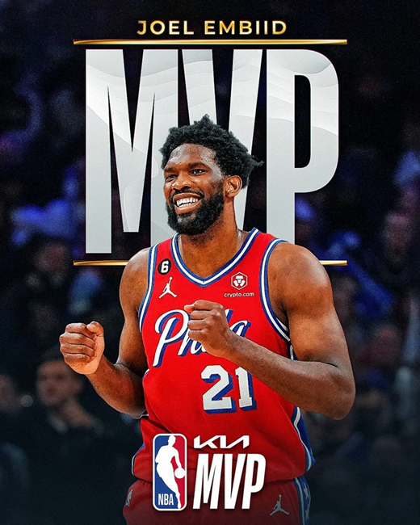

Joel Embiid é eleito MVP da NBA

Joel Embiid é eleito MVP da NBA pela primeira vez na carreira
Joel Embiid, enfim, conquistou o título de MVP da NBA. O astro do Philadelphia 76ers faturou o título de melhor jogador da temporda 2022/2023 após ficar duas vezes em segundo lugar. O pivô de 29 anos está no auge da carreira. Ele terminou a temporada regular com médias de 33,1 pontos, 4,2 assistências e 10,2 rebotes. Ele repetiu as marcas na temporada de 2021/2022, quando foi o cestinha da liga. O camisa 21 nasceu em Camarões e se naturalizou francês. Ele entrou para uma seleta lista, assim como seus concorrentes, de estrangeiros que já conquistaram o prêmio. Embiid é o segundo jogador do continente africano a faturar a honraria. Hakeem Olajuwon, da Nigéria, foi o MVP da temporada 1993/1994. Além deles, o canadense Steve Nash e o alemão Dirk Nowitzki também receberam o título.
A história de Joel Embiid
Joel Embiid é um dos jogadores mais talentosos e versáteis da NBA atualmente. O pivô camaronês de 2,13m de altura é capaz de jogar como um verdadeiro center clássico, mas também tem habilidade e técnica suficientes para jogar como um ala-pivô moderno. Acompanhe, no artigo de hoje, a trajetória de vida deste gigante da NBA.
Infância e juventude
Joel Embiid nasceu em 16 de março de 1994 (29 anos), em Yaoundé, capital de Camarões. Ele cresceu em uma família de esportistas, com dois irmãos mais novos que também jogavam basquete. Desde muito jovem, Embiid mostrou um grande talento para o esporte, mas suas primeiras ambições eram se tornar jogador de vôlei ou de futebol. Em 2011, aos 17 anos, Embiid se mudou para os Estados Unidos para estudar e jogar basquete na Montverde Academy, na Flórida. O desempenho nos campeonatos da academia fizeram com que Embiid fosse descoberto pelos olheiros da Universidade do Kansas, uma das mais tradicionais do basquete universitário americano.
Universidade do Kansas
Em 2013, Embiid começou sua carreira universitária na Universidade do Kansas. Ele se destacou rapidamente como um dos melhores jogadores da equipe, com médias de 11,2 pontos, 8,1 rebotes e 2,6 bloqueios por jogo. No entanto, uma lesão nas costas o deixou de fora dos playoffs da NCAA naquele ano. Na temporada seguinte, Embiid continuou a brilhar, mas outra lesão tirou o pivô dos playoffs. Mesmo assim, sua habilidade e talento chamaram a atenção dos olheiros da NBA, que gostariam de contar com o jovem pivô em suas franquias.
Draft e primeiras temporadas na NBA
Em 2014, Embiid foi selecionado na terceira escolha geral do Draft da NBA pelo Philadelphia 76ers. No entanto, sua primeira temporada foi adiada devido a uma lesão no pé, que tirou o jogador das quadras. Sua primeira temporada efetiva e consistente na liga foi em 2016, quando ele finalmente pôde mostrar todo seu talento em quadra. Nos primeiros anos de sua carreira na NBA, Embiid lutou com lesões constantes que o impediam de engatar sequências de muitos jogos. No entanto, quando ele estava saudável, mostrou todo o seu potencial, com médias de 24,8 pontos, 11 rebotes e 3,1 assistências por jogo na temporada 2018-19.
Consolidação como uma estrela da NBA
A temporada de 2019-20 foi um marco na carreira de Embiid. Ele liderou os 76ers em pontos e rebotes por jogo e foi selecionado para o All-Star Game da NBA pela terceira vez em sua carreira. Infelizmente, a temporada teve de ser bastante adaptada em decorrência da pandemia e os Sixers não tiveram sucesso na pós-temporada. Em 2021, Embiid fez grande temporada. Ele foi o líder da equipe dos 76ers em média de pontos, rebotes e bloqueios por jogo, além de ser selecionado para o All-Star Game pelo quarto ano consecutivo. Embiid também foi um dos indicados ao prêmio de MVP da temporada regular, que acabou sendo entregue a Nikola Jokic. Em 2022, Embiid seguiu com as excelentes atuações e o Philadelphia passou por algumas mudanças no seu elenco, como a adição de James Harden ao time. Embiid foi novamente indicado ao prêmio de MVP, mas Nikola Jokic foi nomeado o melhor jogador pela segunda vez consecutiva.
Reconhecimento dos resultados
Após várias temporadas como um dos melhores jogadores da liga, Embiid finalmente recebeu o reconhecimento profissional que tanto merecia. O pivô foi eleito o MVP da temporada regular, superando o Sérvio Nikola Jokic. Com a premiação, Embiid se consolida cada vez mais como um dos maiores pivôs da NBA no século atual.